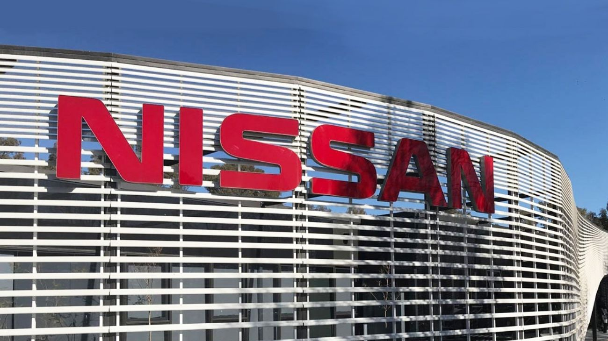

Nissan vende su filial argentina al Grupo SIMPA y al Grupo Tagle
La marca japonesa confirmó un memorando de entendimiento para transferir su operación comercial a capitales locales, dentro de su estrategia global de eficiencia.

Nissan Argentina confirmó oficialmente que firmó un memorando de entendimiento con el Grupo SIMPA y el Grupo Tagle para transferir su operación comercial en el país. La marca japonesa pasará de mantener una filial propia a operar a través de un modelo de importador y distribuidor con capitales nacionales, el mismo esquema que ya aplica en Chile, Perú y otros 36 mercados de la región bajo la unidad NIBU. El movimiento forma parte de la estrategia global denominada "Re:Nissan", orientada a reducir costos operativos y ganar agilidad en mercados donde el volumen de ventas no justifica la estructura de una subsidiaria directa.
El anuncio llega apenas una semana después de que el presidente de Nissan Argentina, Ricardo Flammini, hubiera desmentido versiones sobre una posible salida de la marca durante la presentación del nuevo Kait —sucesor del popular Kicks—, lo que generó cierta confusión en el sector. La aclaración oficial es precisa: Nissan no se retira de Argentina, sino que reorganiza la manera en que opera. El memorando firmado es solo el primer paso de un proceso de negociación que aún está en revisión, y no existe un acuerdo definitivo ni una fecha de cierre establecida. Las conversaciones entre las partes comenzaron hacia finales de 2025.
Para los clientes actuales y futuros, la empresa fue enfática en señalar que no habrá interrupciones. Las ventas continúan con normalidad en toda la red de concesionarios del país, los lanzamientos de nuevos modelos siguen en pie —además del Kait, se esperan otros dos antes de fin de año—, y el servicio de posventa y garantías se mantiene sin modificaciones. El único aspecto que cambiará para quienes tienen contratos de Plan de Ahorro Nissan es que esos contratos serán transferidos al nuevo distribuidor, aunque la empresa garantizó que las condiciones pactadas se respetarán íntegramente.
El antecedente más reciente de esta reconfiguración es el cierre de la producción de la pick-up Frontier en la planta de Santa Isabel, Córdoba, que se concretó en 2024. Ese movimiento ya anticipaba que Nissan estaba revisando su presencia industrial y comercial en Argentina. La decisión de ceder la distribución a grupos locales como SIMPA y Tagle —con amplia experiencia en el mercado automotriz regional— apunta a sostener la presencia de la marca sin cargar con los costos fijos de una filial propia, en un mercado que, si bien mostró recuperación en 2025, sigue siendo pequeño en términos globales para una automotriz de ese tamaño.